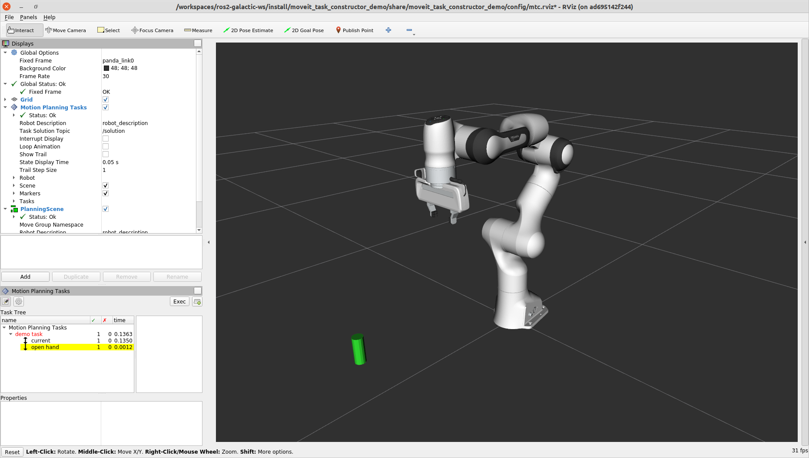
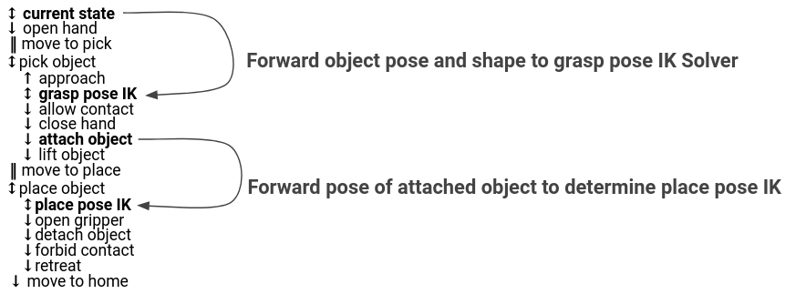

Pick and Place with MoveIt Task Constructor
This tutorial will walk you through creating a package that plans a pick and place operation using MoveIt Task Constructor. MoveIt Task Constructor provides a way to plan for tasks that consist of multiple different subtasks (known as stages). If you just want to run the tutorial, you can follow the Docker Guide to start a container with the completed tutorial.
1 Basic Concepts
The fundamental idea of MTC is that complex motion planning problems can be composed into a set of simpler subproblems. The top-level planning problem is specified as a Task while all subproblems are specified by Stages. Stages can be arranged in any arbitrary order and hierarchy only limited by the individual stages types. The order in which stages can be arranged is restricted by the direction in which results are passed. There are three possible stages relating to the result flow: generator, propagator, and connector stages:
Generators compute their results independently of their neighbor stages and pass them in both directions, backwards and forwards. An example is an IK sampler for geometric poses where approaching and departing motions (neighbor stages) depend on the solution.
Propagators receive the result of one neighbor stage, solve a subproblem and then propagate their result to the neighbor on the opposite site. Depending on the implementation, propagating stages can pass solutions forward, backward or in both directions separately. An example is a stage that computes a Cartesian path based on either a start or a goal state.
Connectors do not propagate any results, but rather attempt to bridge the gap between the resulting states of both neighbors. An example is the computation of a free-motion plan from one given state to another.
Additional to the order types, there are different hierarchy types allowing to encapsulate subordinate stages. Stages without subordinate stages are called primitive stages, higher-level stages are called container stages. There are three container types:
Wrappers encapsulate a single subordinate stage and modify or filter the results. For example, a filter stage that only accepts solutions of its child stage that satisfy a certain constraint can be realized as a wrapper. Another standard use of this type includes the IK wrapper stage, which generates inverse kinematics solutions based on planning scenes annotated with a pose target property.
Serial Containers hold a sequence of subordinate stages and only consider end-to-end solutions as results. An example is a picking motion that consists of a sequence of coherent steps.
Parallel Containers combine set of subordinate stages and can be used for passing the best of alternative results, running fallback solvers or for merging multiple independent solutions. Examples are running alternative planners for a free-motion plan, picking objects with the right hand or with the left hand as a fallback, or moving the arm and opening the gripper at the same time.

Stages not only support solving motion planning problems. They can also be used for all kinds of state transitions, as for instance modifying the planning scene. Combined with the possibility of using class inheritance it is possible to construct very complex behavior while only relying on a well-structured set of primitive stages.
2 Getting Started
If you haven’t already done so, make sure you’ve completed the steps in Getting Started.
2.1 Download MoveIt Task Constructor
Move into your colcon workspace and pull the MoveIt Task Constructor source:
cd ~/ws_moveit/src
git clone git@github.com:ros-planning/moveit_task_constructor.git -b ros2
vcs import < moveit_task_constructor/.repos
3 Trying It Out
The MoveIt Task Constructor package contains several basic examples and a pick-and-place demo. For all demos you should launch the basic environment:
ros2 launch moveit_task_constructor_demo demo.launch.py
Subsequently, you can run the individual demos:
ros2 run moveit_task_constructor_demo cartesian
ros2 run moveit_task_constructor_demo modular
ros2 launch moveit_task_constructor_demo pickplace.launch.py
On the right side you should see the Motion Planning Tasks panel outlining the hierarchical stage structure of the tasks. When you select a particular stage, the list of successful and failed solutions will be shown in the right-most window. Selecting one of those solutions will start its visualization.

4 Setting up a Project with MoveIt Task Constructor
This section walks through the steps required to build a simple task with MoveIt Task Constructor.
4.1 Create a New Package
Create a new package with the following command:
ros2 pkg create \
--build-type ament_cmake \
--dependencies moveit_task_constructor_core rclcpp \
--node-name mtc_node mtc_tutorial
This will create a new package and folder called mtc_tutorial with a dependency on moveit_task_constructor_core as well as a hello world example in src/mtc_node.
4.2 The Code
Open mtc_node.cpp in your editor of choice, and paste in the following code.
#include <rclcpp/rclcpp.hpp>
#include <moveit/planning_scene/planning_scene.h>
#include <moveit/planning_scene_interface/planning_scene_interface.h>
#include <moveit/task_constructor/task.h>
#include <moveit/task_constructor/solvers.h>
#include <moveit/task_constructor/stages.h>
#if __has_include(<tf2_geometry_msgs/tf2_geometry_msgs.hpp>)
#include <tf2_geometry_msgs/tf2_geometry_msgs.hpp>
#else
#include <tf2_geometry_msgs/tf2_geometry_msgs.h>
#endif
#if __has_include(<tf2_eigen/tf2_eigen.hpp>)
#include <tf2_eigen/tf2_eigen.hpp>
#else
#include <tf2_eigen/tf2_eigen.h>
#endif
static const rclcpp::Logger LOGGER = rclcpp::get_logger("mtc_tutorial");
namespace mtc = moveit::task_constructor;
class MTCTaskNode
{
public:
MTCTaskNode(const rclcpp::NodeOptions& options);
rclcpp::node_interfaces::NodeBaseInterface::SharedPtr getNodeBaseInterface();
void doTask();
void setupPlanningScene();
private:
// Compose an MTC task from a series of stages.
mtc::Task createTask();
mtc::Task task_;
rclcpp::Node::SharedPtr node_;
};
MTCTaskNode::MTCTaskNode(const rclcpp::NodeOptions& options)
: node_{ std::make_shared<rclcpp::Node>("mtc_node", options) }
{
}
rclcpp::node_interfaces::NodeBaseInterface::SharedPtr MTCTaskNode::getNodeBaseInterface()
{
return node_->get_node_base_interface();
}
void MTCTaskNode::setupPlanningScene()
{
moveit_msgs::msg::CollisionObject object;
object.id = "object";
object.header.frame_id = "world";
object.primitives.resize(1);
object.primitives[0].type = shape_msgs::msg::SolidPrimitive::CYLINDER;
object.primitives[0].dimensions = { 0.1, 0.02 };
geometry_msgs::msg::Pose pose;
pose.position.x = 0.5;
pose.position.y = -0.25;
object.pose = pose;
moveit::planning_interface::PlanningSceneInterface psi;
psi.applyCollisionObject(object);
}
void MTCTaskNode::doTask()
{
task_ = createTask();
try
{
task_.init();
}
catch (mtc::InitStageException& e)
{
RCLCPP_ERROR_STREAM(LOGGER, e);
return;
}
if (!task_.plan(5))
{
RCLCPP_ERROR_STREAM(LOGGER, "Task planning failed");
return;
}
task_.introspection().publishSolution(*task_.solutions().front());
auto result = task_.execute(*task_.solutions().front());
if (result.val != moveit_msgs::msg::MoveItErrorCodes::SUCCESS)
{
RCLCPP_ERROR_STREAM(LOGGER, "Task execution failed");
return;
}
return;
}
mtc::Task MTCTaskNode::createTask()
{
mtc::Task task;
task.stages()->setName("demo task");
task.loadRobotModel(node_);
const auto& arm_group_name = "panda_arm";
const auto& hand_group_name = "hand";
const auto& hand_frame = "panda_hand";
// Set task properties
task.setProperty("group", arm_group_name);
task.setProperty("eef", hand_group_name);
task.setProperty("ik_frame", hand_frame);
// Disable warnings for this line, as it's a variable that's set but not used in this example
#pragma GCC diagnostic push
#pragma GCC diagnostic ignored "-Wunused-but-set-variable"
mtc::Stage* current_state_ptr = nullptr; // Forward current_state on to grasp pose generator
#pragma GCC diagnostic pop
auto stage_state_current = std::make_unique<mtc::stages::CurrentState>("current");
current_state_ptr = stage_state_current.get();
task.add(std::move(stage_state_current));
auto sampling_planner = std::make_shared<mtc::solvers::PipelinePlanner>(node_);
auto interpolation_planner = std::make_shared<mtc::solvers::JointInterpolationPlanner>();
auto cartesian_planner = std::make_shared<mtc::solvers::CartesianPath>();
cartesian_planner->setMaxVelocityScaling(1.0);
cartesian_planner->setMaxAccelerationScaling(1.0);
cartesian_planner->setStepSize(.01);
auto stage_open_hand =
std::make_unique<mtc::stages::MoveTo>("open hand", interpolation_planner);
stage_open_hand->setGroup(hand_group_name);
stage_open_hand->setGoal("open");
task.add(std::move(stage_open_hand));
return task;
}
int main(int argc, char** argv)
{
rclcpp::init(argc, argv);
rclcpp::NodeOptions options;
options.automatically_declare_parameters_from_overrides(true);
auto mtc_task_node = std::make_shared<MTCTaskNode>(options);
rclcpp::executors::MultiThreadedExecutor executor;
auto spin_thread = std::make_unique<std::thread>([&executor, &mtc_task_node]() {
executor.add_node(mtc_task_node->getNodeBaseInterface());
executor.spin();
executor.remove_node(mtc_task_node->getNodeBaseInterface());
});
mtc_task_node->setupPlanningScene();
mtc_task_node->doTask();
spin_thread->join();
rclcpp::shutdown();
return 0;
}
4.3 Code Breakdown
The top of the code includes the ROS and MoveIt Libraries that this package uses.
rclcpp/rclcpp.hppincludes core ROS2 functionality
moveit/planning_scene/planning_scene.handmoveit/planning_scene_interface/planning_scene_interface.hinclude functionality to interface with the robot model and collision objects
moveit/task_constructor/task.h,moveit/task_constructor/solvers.h, andmoveit/task_constructor/stages.hinclude different components of MoveIt Task Constructor that are used in the example
tf2_geometry_msgs/tf2_geometry_msgs.hppandtf2_eigen/tf2_eigen.hppwon’t be used in this initial example, but they will be used for pose generation when we add more stages to the MoveIt Task Constructor task.
#include <rclcpp/rclcpp.hpp>
#include <moveit/planning_scene/planning_scene.h>
#include <moveit/planning_scene_interface/planning_scene_interface.h>
#include <moveit/task_constructor/task.h>
#include <moveit/task_constructor/solvers.h>
#include <moveit/task_constructor/stages.h>
#if __has_include(<tf2_geometry_msgs/tf2_geometry_msgs.hpp>)
#include <tf2_geometry_msgs/tf2_geometry_msgs.hpp>
#else
#include <tf2_geometry_msgs/tf2_geometry_msgs.h>
#endif
#if __has_include(<tf2_eigen/tf2_eigen.hpp>)
#include <tf2_eigen/tf2_eigen.hpp>
#else
#include <tf2_eigen/tf2_eigen.h>
#endif
The next line gets a logger for our new node. We also create a namespace alias for moveit::task_constructor for convenience.
static const rclcpp::Logger LOGGER = rclcpp::get_logger("mtc_tutorial");
namespace mtc = moveit::task_constructor;
We start by defining a class that will contain the main MoveIt Task Constructor functionality. We also declare the MoveIt Task Constructor task object as a member variable for our class: this isn’t strictly necessary for a given application, but it helps save the task for later visualization purposes. We will explore each function individually below.
class MTCTaskNode
{
public:
MTCTaskNode(const rclcpp::NodeOptions& options);
rclcpp::node_interfaces::NodeBaseInterface::SharedPtr getNodeBaseInterface();
void doTask();
void setupPlanningScene();
private:
// Compose an MTC task from a series of stages.
mtc::Task createTask();
mtc::Task task_;
rclcpp::Node::SharedPtr node_;
};
These lines initialize the node with specified options (it is the constructor of our MTCTaskNode class).
MTCTaskNode::MTCTaskNode(const rclcpp::NodeOptions& options)
: node_{ std::make_shared<rclcpp::Node>("mtc_node", options) }
{
}
These next lines define a getter function to get the node base interface, which will be used for the executor later.
rclcpp::node_interfaces::NodeBaseInterface::SharedPtr MTCTaskNode::getNodeBaseInterface()
{
return node_->get_node_base_interface();
}
This class method is used to set up the planning scene that is used in the example. It creates a cylinder with dimensions specified by object.primitives[0].dimensions and position specified by pose.position.x and pose.position.y.
You can try changing these numbers to resize and move the cylinder around. If we move the cylinder out of the robot’s reach, planning will fail.
void MTCTaskNode::setupPlanningScene()
{
moveit_msgs::msg::CollisionObject object;
object.id = "object";
object.header.frame_id = "world";
object.primitives.resize(1);
object.primitives[0].type = shape_msgs::msg::SolidPrimitive::CYLINDER;
object.primitives[0].dimensions = { 0.1, 0.02 };
geometry_msgs::msg::Pose pose;
pose.position.x = 0.5;
pose.position.y = -0.25;
object.pose = pose;
moveit::planning_interface::PlanningSceneInterface psi;
psi.applyCollisionObject(object);
}
This function interfaces with the MoveIt Task Constructor task object. It first creates a task, which includes setting some properties and adding stages. This will be discussed further in the createTask function definition. Next, task.init() initializes the task and task.plan(5) generates a plan, stopping after 5 successful plans are found. The next line publishes the solution to be visualized in RViz - this line can be removed if you don’t care for visualization. Finally, task.execute() executes the plan. Execution occurs via an action server interface with the RViz plugin.
void MTCTaskNode::doTask()
{
task_ = createTask();
try
{
task_.init();
}
catch (mtc::InitStageException& e)
{
RCLCPP_ERROR_STREAM(LOGGER, e);
return;
}
if (!task_.plan(5))
{
RCLCPP_ERROR_STREAM(LOGGER, "Task planning failed");
return;
}
task_.introspection().publishSolution(*task_.solutions().front());
auto result = task_.execute(*task_.solutions().front());
if (result.val != moveit_msgs::msg::MoveItErrorCodes::SUCCESS)
{
RCLCPP_ERROR_STREAM(LOGGER, "Task execution failed");
return;
}
return;
}
As mentioned above, this function creates a MoveIt Task Constructor object and sets some initial properties. In this case, we set the task name to “demo_task”, load the robot model, define the names of some useful frames, and set those frame names as properties of the task with task.setProperty(property_name, value). The next few code blocks will fill out this function body.
mtc::Task MTCTaskNode::createTask()
{
moveit::task_constructor::Task task;
task.stages()->setName("demo task");
task.loadRobotModel(node_);
const auto& arm_group_name = "panda_arm";
const auto& hand_group_name = "hand";
const auto& hand_frame = "panda_hand";
// Set task properties
task.setProperty("group", arm_group_name);
task.setProperty("eef", hand_group_name);
task.setProperty("ik_frame", hand_frame);
Now, we add an example stage to the node. The first line sets current_state_ptr to nullptr; this creates a pointer to a stage such that we can re-use stage information in specific scenarios. This line is not used at this moment, but will be used later when more stages are added to the task. Next, we make a current_state stage (a generator stage) and add it to our task - this starts the robot off in its current state. Now that we’ve created the CurrentState stage, we save a pointer to it in the current_state_ptr for later use.
mtc::Stage* current_state_ptr = nullptr; // Forward current_state on to grasp pose generator
auto stage_state_current = std::make_unique<mtc::stages::CurrentState>("current");
current_state_ptr = stage_state_current.get();
task.add(std::move(stage_state_current));
Solvers are used to define the type of robot motion. MoveIt Task Constructor has three options for solvers:
PipelinePlanner uses MoveIt’s planning pipeline, which typically defaults to OMPL.
auto sampling_planner = std::make_shared<mtc::solvers::PipelinePlanner>(node_);JointInterpolation is a simple planner that interpolates between the start and goal joint states. It is typically used for simple motions as it computes quickly but doesn’t support complex motions.
auto interpolation_planner = std::make_shared<mtc::solvers::JointInterpolationPlanner>();CartesianPath is used to move the end effector in a straight line in Cartesian space.
auto cartesian_planner = std::make_shared<mtc::solvers::CartesianPath>();
Feel free to try out the different solvers and see how the robot motion changes. For the first stage we will use the Cartesian planner, which requires the following properties to be set:
auto cartesian_planner = std::make_shared<mtc::solvers::CartesianPath>();
cartesian_planner->setMaxVelocityScaling(1.0);
cartesian_planner->setMaxAccelerationScaling(1.0);
cartesian_planner->setStepSize(.01);
Now that we added in the planners, we can add a stage that will move the robot.
The following lines use a MoveTo stage (a propagator stage). Since opening the hand is a relatively simple movement, we can use the joint interpolation planner.
This stage plans a move to the “open hand” pose, which is a named pose defined in the SRDF for the Panda robot.
We return the task and finish with the createTask() function.
auto stage_open_hand =
std::make_unique<mtc::stages::MoveTo>("open hand", interpolation_planner);
stage_open_hand->setGroup(hand_group_name);
stage_open_hand->setGoal("open");
task.add(std::move(stage_open_hand));
return task;
}
Finally, we have main: the following lines create a node using the class defined above, and calls the class methods to set up and execute a basic MTC task. In this example, we do not cancel the executor once the task has finished executing to keep the node alive to inspect the solutions in RViz.
int main(int argc, char** argv)
{
rclcpp::init(argc, argv);
rclcpp::NodeOptions options;
options.automatically_declare_parameters_from_overrides(true);
auto mtc_task_node = std::make_shared<MTCTaskNode>(options);
rclcpp::executors::MultiThreadedExecutor executor;
auto spin_thread = std::make_unique<std::thread>([&executor, &mtc_task_node]() {
executor.add_node(mtc_task_node->getNodeBaseInterface());
executor.spin();
executor.remove_node(mtc_task_node->getNodeBaseInterface());
});
mtc_task_node->setupPlanningScene();
mtc_task_node->doTask();
spin_thread->join();
rclcpp::shutdown();
return 0;
}
5 Running the Demo
5.1 Launch Files
We will need a launch file to launch the move_group, ros2_control, static_tf, robot_state_publisher, and rviz nodes that provide us the environment to run the demo. The one we will use for this example can be found here.
To run the MoveIt Task Constructor node, we will use a second launch file to start the mtc_tutorial executable with the proper parameters. Here we can load URDF, SRDF, and OMPL parameters, or use MoveIt Configs Utils to do so. Your launch file should look something like the one found in this tutorial package here (pay close attention to the package and executable arguments below as they are different from the launch file linked) :
from launch import LaunchDescription
from launch_ros.actions import Node
from moveit_configs_utils import MoveItConfigsBuilder
def generate_launch_description():
moveit_config = MoveItConfigsBuilder("moveit_resources_panda").to_dict()
# MTC Demo node
pick_place_demo = Node(
package="mtc_tutorial",
executable="mtc_node",
output="screen",
parameters=[
moveit_config,
],
)
return LaunchDescription([pick_place_demo])
Save a launch file as pick_place_demo.launch.py or download one to the package’s launch directory. Make sure to edit the CMakeLists.txt so it includes the launch folder by adding the following lines:
install(DIRECTORY launch
DESTINATION share/${PROJECT_NAME}
)
Now we can build and source the colcon workspace.
cd ~/ws_moveit
colcon build --mixin release
source ~/ws_moveit/install/setup.bash
Start by launching the first launch file. If you want to use the one provided by the tutorials:
ros2 launch moveit2_tutorials mtc_demo.launch.py
RViz will now load. If you’re using your own launch file and haven’t included an rviz config such as this, you will need to configure RViz before you see anything displayed. If you’re using the launch file from the tutorials package, RViz will already be configured for you and you can jump to the end of the next section.
5.2 RViz Configuration
If you are not using the RViz configuration provided, we’ll have to make some changes to the RViz configuration to see your robot and the MoveIt Task Constructor solutions. First, start RViz. The following steps will cover how to set up RViz for MoveIt Task Constructor solution visualization.
If the MotionPlanning display is active, uncheck it to hide it for now.
Under Global Options, change the Fixed Frame from
maptopanda_link0if not already done.On the bottom left of the window, click the Add button.
Under
moveit_task_constructor_visualizationselect Motion Planning Tasks and click OK. The Motion Planning Tasks display should appear on the bottom left.In the Displays, under Motion Planning Tasks, change Task Solution Topic to
/solution
You should see the panda arm in the main view with Motion Planning Tasks display open in the bottom left and nothing in it. Your MTC task will show up in this panel once you launch the mtc_tutorial node. If you’re using mtc_demo.launch.py from the tutorials, jump back in here.
5.3 Launching the Demo
Launch the mtc_tutorial node with
ros2 launch mtc_tutorial pick_place_demo.launch.py
You should see the arm execute the task with the single stage to open the hand, with the cylinder in green in front of it. It should look something like this:
{kind=link}
If you haven’t made your own package, but still want to see what this looks like, you can launch this file from the tutorials:
ros2 launch moveit2_tutorials mtc_demo_minimal.launch.py
6 Adding Stages
So far, we’ve walked through creating and executing a simple task, which runs but does not do much. Now, we will start adding the pick-and-place stages to the task. The image below shows an outline of the stages we will use in our task.
{kind=link}
We will start adding stages after our existing open hand stage. Open mtc_node.cpp and locate the following lines:
auto stage_open_hand =
std::make_unique<mtc::stages::MoveTo>("open hand", interpolation_planner);
stage_open_hand->setGroup(hand_group_name);
stage_open_hand->setGoal("open");
task.add(std::move(stage_open_hand));
// Add the next lines of codes to define more stages here
6.1 Pick Stages
We need to move the arm to a position where we can pick up our object. This is done with a Connect stage, which as its name implies, is a Connector stage. This means that it tries to bridge between the results of the stage before and after it. This stage is initialized with a name, move_to_pick, and a GroupPlannerVector that specifies the planning group and the planner. We then set a timeout for the stage, set the properties for the stage, and add it to our task.
auto stage_move_to_pick = std::make_unique<mtc::stages::Connect>(
"move to pick",
mtc::stages::Connect::GroupPlannerVector{ { arm_group_name, sampling_planner } });
stage_move_to_pick->setTimeout(5.0);
stage_move_to_pick->properties().configureInitFrom(mtc::Stage::PARENT);
task.add(std::move(stage_move_to_pick));
Next, we create a pointer to a MoveIt Task Constructor stage object, and set it to nullptr for now. Later, we will use this to save a stage.
mtc::Stage* attach_object_stage =
nullptr; // Forward attach_object_stage to place pose generator
This next block of code creates a SerialContainer.
This is a container that can be added to our task and can hold several substages.
In this case, we create a serial container that will contain the stages relevant to the picking action.
Instead of adding the stages to the task, we will add the relevant stages to the serial container. We use exposeTo() to declare the task properties from the parent task in the new serial container, and use configureInitFrom() to initialize them.
This allows the contained stages to access these properties.
{
auto grasp = std::make_unique<mtc::SerialContainer>("pick object");
task.properties().exposeTo(grasp->properties(), { "eef", "group", "ik_frame" });
grasp->properties().configureInitFrom(mtc::Stage::PARENT,
{ "eef", "group", "ik_frame" });
We then create a stage to approach the object. This stage is a MoveRelative stage, which allows us to specify a relative movement from our current position. MoveRelative is a propagator stage: it receives the solution from its neighbouring stages and propagates it to the next or previous stage. Using cartesian_planner finds a solution that involves moving the end effector in a straight line. We set the properties, and set the minimum and maximum distance to move. Now we create a Vector3Stamped message to indicate the direction we want to move - in this case, in the Z direction from the hand frame. Finally, we add this stage to our serial container
{
auto stage =
std::make_unique<mtc::stages::MoveRelative>("approach object", cartesian_planner);
stage->properties().set("marker_ns", "approach_object");
stage->properties().set("link", hand_frame);
stage->properties().configureInitFrom(mtc::Stage::PARENT, { "group" });
stage->setMinMaxDistance(0.1, 0.15);
// Set hand forward direction
geometry_msgs::msg::Vector3Stamped vec;
vec.header.frame_id = hand_frame;
vec.vector.z = 1.0;
stage->setDirection(vec);
grasp->insert(std::move(stage));
}
Now, create a stage to generate the grasp pose.
This is a generator stage, so it computes its results without regard to the stages before and after it.
The first stage, CurrentState is a generator stage as well - to connect the first stage and this stage, a connecting stage must be used, which we already created above.
This code sets the stage properties, sets the pose before grasping, the angle delta, and the monitored stage.
Angle delta is a property of the GenerateGraspPose stage that is used to determine the number of poses to generate; when generating solutions, MoveIt Task Constructor will try to grasp the object from many different orientations, with the difference between the orientations specified by the angle delta. The smaller the delta, the closer together the grasp orientations will be. When defining the current stage, we set current_state_ptr, which is now used to forward information about the object pose and shape to the inverse kinematics solver.
This stage won’t be directly added to the serial container like previously, as we still need to do inverse kinematics on the poses it generates.
{
// Sample grasp pose
auto stage = std::make_unique<mtc::stages::GenerateGraspPose>("generate grasp pose");
stage->properties().configureInitFrom(mtc::Stage::PARENT);
stage->properties().set("marker_ns", "grasp_pose");
stage->setPreGraspPose("open");
stage->setObject("object");
stage->setAngleDelta(M_PI / 12);
stage->setMonitoredStage(current_state_ptr); // Hook into current state
Before we compute inverse kinematics for the poses generated above, we first need to define the frame. This can be done with a PoseStamped message from geometry_msgs or in this case, we define the transform using Eigen transformation matrix and the name of the relevant link. Here, we define the transformation matrix.
Eigen::Isometry3d grasp_frame_transform;
Eigen::Quaterniond q = Eigen::AngleAxisd(M_PI / 2, Eigen::Vector3d::UnitX()) *
Eigen::AngleAxisd(M_PI / 2, Eigen::Vector3d::UnitY()) *
Eigen::AngleAxisd(M_PI / 2, Eigen::Vector3d::UnitZ());
grasp_frame_transform.linear() = q.matrix();
grasp_frame_transform.translation().z() = 0.1;
Now, we create the ComputeIK stage, and give it the name generate pose IK as well as the generate grasp pose stage defined above. Some robots have multiple inverse kinematics solutions for a given pose - we set the limit on the amount of solutions to solve for up to 8. We also set the minimum solution distance, which is a threshold on how different solutions must be: if the joint positions in a solution are too similar to a previous solution, it will be marked as invalid. Next, we configure some additional properties, and add the ComputeIK stage to the serial container.
// Compute IK
auto wrapper =
std::make_unique<mtc::stages::ComputeIK>("grasp pose IK", std::move(stage));
wrapper->setMaxIKSolutions(8);
wrapper->setMinSolutionDistance(1.0);
wrapper->setIKFrame(grasp_frame_transform, hand_frame);
wrapper->properties().configureInitFrom(mtc::Stage::PARENT, { "eef", "group" });
wrapper->properties().configureInitFrom(mtc::Stage::INTERFACE, { "target_pose" });
grasp->insert(std::move(wrapper));
}
To pick up the object, we must allow collision between the hand and the object. This can be done with a ModifyPlanningScene stage. The allowCollisions function lets us specify which collisions to disable.
allowCollisions can be used with a container of names, so we can use getLinkModelNamesWithCollisionGeometry to get all the names of links with collision geometry in the hand group.
{
auto stage =
std::make_unique<mtc::stages::ModifyPlanningScene>("allow collision (hand,object)");
stage->allowCollisions("object",
task.getRobotModel()
->getJointModelGroup(hand_group_name)
->getLinkModelNamesWithCollisionGeometry(),
true);
grasp->insert(std::move(stage));
}
With collisions allowed, we now can close the hand. This is done with a MoveTo stage, similarly to the open hand stage from above, except moving to the close position as defined in the SRDF.
{
auto stage = std::make_unique<mtc::stages::MoveTo>("close hand", interpolation_planner);
stage->setGroup(hand_group_name);
stage->setGoal("close");
grasp->insert(std::move(stage));
}
We now use a ModifyPlanningScene stage again, this time to attach the object to the hand using attachObject. Similarly to what we did with the current_state_ptr, we get a pointer to this stage for later use when generating the place pose for the object.
{
auto stage = std::make_unique<mtc::stages::ModifyPlanningScene>("attach object");
stage->attachObject("object", hand_frame);
attach_object_stage = stage.get();
grasp->insert(std::move(stage));
}
Next, we lift the object with a MoveRelative stage, similarly to the approach_object stage.
{
auto stage =
std::make_unique<mtc::stages::MoveRelative>("lift object", cartesian_planner);
stage->properties().configureInitFrom(mtc::Stage::PARENT, { "group" });
stage->setMinMaxDistance(0.1, 0.3);
stage->setIKFrame(hand_frame);
stage->properties().set("marker_ns", "lift_object");
// Set upward direction
geometry_msgs::msg::Vector3Stamped vec;
vec.header.frame_id = "world";
vec.vector.z = 1.0;
stage->setDirection(vec);
grasp->insert(std::move(stage));
}
With this, we have all the stages needed to pick the object. Now, we add the serial container (with all its substages) to the task. If you build the package as-is, you can see the robot plan to pick up the object.
task.add(std::move(grasp));
}
To test out the newly created stage, build the code and execute:
ros2 launch mtc_tutorial pick_place_demo.launch.py
6.2 Place Stages
Now that the stages that define the pick are complete, we move on to defining the stages for placing the object. Picking up where we left off, we add a Connect stage to connect the two, as we will soon be using a generator stage to generate the pose for placing the object.
{
auto stage_move_to_place = std::make_unique<mtc::stages::Connect>(
"move to place",
mtc::stages::Connect::GroupPlannerVector{ { arm_group_name, sampling_planner },
{ hand_group_name, sampling_planner } });
stage_move_to_place->setTimeout(5.0);
stage_move_to_place->properties().configureInitFrom(mtc::Stage::PARENT);
task.add(std::move(stage_move_to_place));
}
We also create a serial container for the place stages. This is done similarly to the pick serial container. The next stages will be added to the serial container rather than the task.
{
auto place = std::make_unique<mtc::SerialContainer>("place object");
task.properties().exposeTo(place->properties(), { "eef", "group", "ik_frame" });
place->properties().configureInitFrom(mtc::Stage::PARENT,
{ "eef", "group", "ik_frame" });
This next stage generates the poses used to place the object and compute the inverse kinematics for those poses - it is somewhat similar to the generate grasp pose stage from the pick serial container. We start by creating a stage to generate the poses and inheriting the task properties. We specify the pose where we want to place the object with a PoseStamped message from geometry_msgs - in this case, we choose y = 0.5. We then pass the target pose to the stage with setPose.
Next, we use setMonitoredStage and pass it the pointer to the attach_object stage from earlier.
This allows the stage to know how the object is attached.
We then create a ComputeIK stage and pass it our GeneratePlacePose stage - the rest follows the same logic as above with the pick stages.
{
// Sample place pose
auto stage = std::make_unique<mtc::stages::GeneratePlacePose>("generate place pose");
stage->properties().configureInitFrom(mtc::Stage::PARENT);
stage->properties().set("marker_ns", "place_pose");
stage->setObject("object");
geometry_msgs::msg::PoseStamped target_pose_msg;
target_pose_msg.header.frame_id = "object";
target_pose_msg.pose.position.y = 0.5;
stage->setPose(target_pose_msg);
stage->setMonitoredStage(attach_object_stage); // Hook into attach_object_stage
// Compute IK
auto wrapper =
std::make_unique<mtc::stages::ComputeIK>("place pose IK", std::move(stage));
wrapper->setMaxIKSolutions(2);
wrapper->setMinSolutionDistance(1.0);
wrapper->setIKFrame(hand_frame);
wrapper->properties().configureInitFrom(mtc::Stage::PARENT, { "eef", "group" });
wrapper->properties().configureInitFrom(mtc::Stage::INTERFACE, { "target_pose" });
place->insert(std::move(wrapper));
}
Now that we’re ready to place the object, we open the hand with MoveTo stage and the joint interpolation planner.
{
auto stage = std::make_unique<mtc::stages::MoveTo>("open hand", interpolation_planner);
stage->setGroup(hand_group_name);
stage->setGoal("open");
place->insert(std::move(stage));
}
We also can re-enable collisions with the object now that we no longer need to hold it.
This is done using allowCollisions almost exactly the same way as disabling collisions, except setting the last argument to false rather than true.
{
auto stage =
std::make_unique<mtc::stages::ModifyPlanningScene>("forbid collision (hand,object)");
stage->allowCollisions("object",
task.getRobotModel()
->getJointModelGroup(hand_group_name)
->getLinkModelNamesWithCollisionGeometry(),
false);
place->insert(std::move(stage));
}
Now, we can detach the object using detachObject.
{
auto stage = std::make_unique<mtc::stages::ModifyPlanningScene>("detach object");
stage->detachObject("object", hand_frame);
place->insert(std::move(stage));
}
We retreat from the object using a MoveRelative stage, which is done similarly to the approach object and lift object stages.
{
auto stage = std::make_unique<mtc::stages::MoveRelative>("retreat", cartesian_planner);
stage->properties().configureInitFrom(mtc::Stage::PARENT, { "group" });
stage->setMinMaxDistance(0.1, 0.3);
stage->setIKFrame(hand_frame);
stage->properties().set("marker_ns", "retreat");
// Set retreat direction
geometry_msgs::msg::Vector3Stamped vec;
vec.header.frame_id = "world";
vec.vector.x = -0.5;
stage->setDirection(vec);
place->insert(std::move(stage));
}
We finish our place serial container and add it to the task.
task.add(std::move(place));
}
The final step is to return home: we use a MoveTo stage and pass it the goal pose of ready, which is a pose defined in the Panda SRDF.
{
auto stage = std::make_unique<mtc::stages::MoveTo>("return home", interpolation_planner);
stage->properties().configureInitFrom(mtc::Stage::PARENT, { "group" });
stage->setGoal("ready");
task.add(std::move(stage));
}
All these stages should be added above these lines.
// Stages all added to the task above this line
return task;
}
Congratulations! You’ve now defined a pick and place task using MoveIt Task Constructor! To try it out, build the code and execute:
ros2 launch mtc_tutorial pick_place_demo.launch.py
7 Further Discussion
The task with each comprising stage is shown in the Motion Planning Tasks pane. Click on a stage and additional information about the stage will show up to the right. The right pane shows different solutions as well as their associated costs. Depending on the stage type and the robot configuration, there may only be one solution shown.
Click one of the solution costs to see an animation of the robot following the plan for that stage. Click the “Exec” button in the upper-right portion of the pane to execute the motion.
To run the complete MoveIt Task Constructor example included with the MoveIt tutorials:
ros2 launch moveit2_tutorials mtc_demo.launch.py
And in a second terminal:
ros2 launch moveit2_tutorials pick_place_demo.launch.py
7.1 Debugging Information Printed to the Terminal
When running MTC, it prints a diagram like this to terminal:
[demo_node-1] 1 - ← 1 → - 0 / initial_state
[demo_node-1] - 0 → 0 → - 0 / move_to_home
This example^ shows two stages. The first stage (“initial_state”) is a CurrentState type of stage, which initializes a PlanningScene and captures any collision objects that are present at that moment.
A pointer to this stage can be used to retrieve the state of the robot.
Since CurrentState inherits from Generator, it propagates solutions both forward and backward.
This is denoted by the arrows in both directions.
The first
1indicates that one solution was successfully propagated backwards to the previous stage.The second
1, between the arrows, indicates that one solution was generated.The
0indicates that a solution was not propagated forward successfully to the next stage, because the next stage failed.
The second stage (“move_to_home”) is a MoveTo type of stage. It inherits its propagation direction from the previous stage, so both arrows point forward. The 0’s indicate that this stage failed completely. From left to right, the 0’s mean:
The stage did not receive a solution from the previous stage
The stage did not generate a solution
The stage did not propagate a solution forward to the next stage
In this case, we could tell that “move_to_home” was the root cause of the failure. The problem was a home state that was in collision. Defining a new, collision-free home position fixed the issue.
7.2 Stages
Information about individual stages can be retrieved from the task. For example, here we retrieve the unique ID for a stage:
uint32_t const unique_stage_id = task_.stages()->findChild(stage_name)->introspectionId();
A CurrentState type stage does not just retrieve the current state of the robot.
It also initializes a PlanningScene object, capturing any collision objects that are present at that moment.
MTC stages can be propagated in forward and backward order.
You can easily check which direction a stage propagates by the arrow in the RViz GUI.
When propagating backwards, the logic of many operations is reversed.
For example, to allow collisions with an object in a ModifyPlanningScene stage, you would call allowCollisions(false) rather than allowCollisions(true). There is a discussion to be read here.